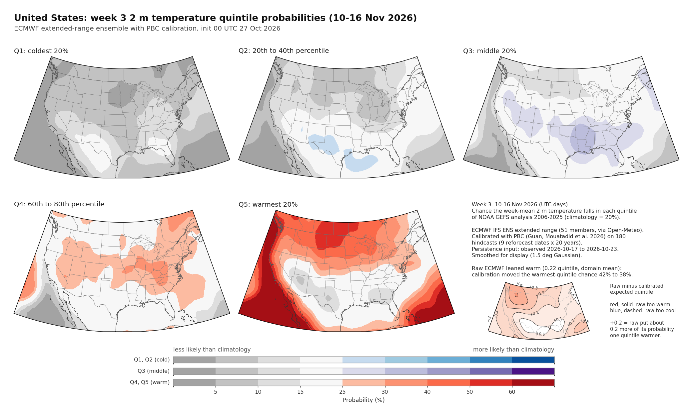

Weather Programmer / subseasonal
Chance that the week-mean temperature falls in each climatological fifth (Q1 coldest 20% through Q5 warmest 80%), from the ECMWF extended-range ensemble after probabilistic bias correction (PBC).
Loading latest init…

Grays are less likely than climatology (~20%). Colour is more likely: blue cold, purple middle, red warm. Open the PNG for the full figure, including the raw-ensemble lean inset.
Each figure is five panels for one region and one forecast week. Week 3 is the third week after the forecast is issued, week 4 the fourth, and so on through week 6. The dates for the week you have selected are shown above the map.
The raw ECMWF ensemble is already turned into quintile probabilities against its own hindcast climate. Probabilistic bias correction (PBC) then averages two adjustments: Debias++, which removes typical probability errors at this lead and time of year, and Persistence++, which nudges those probabilities using the latest observed week. That blend is from Guan, Mouatadid et al. (2026) in Nature; Microsoft Research has a short account of the method.